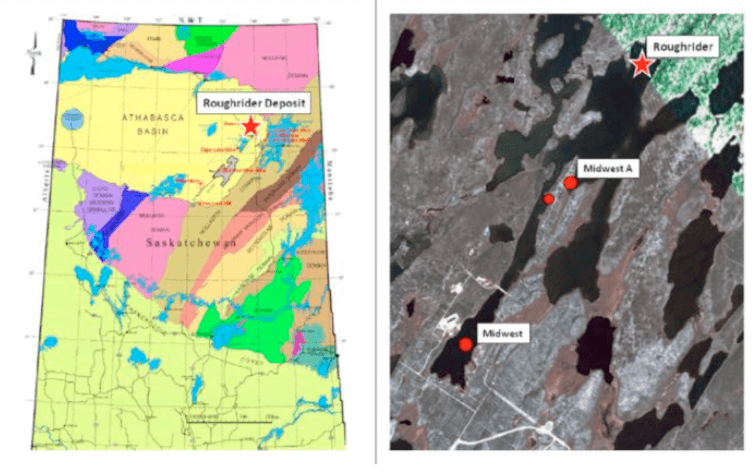
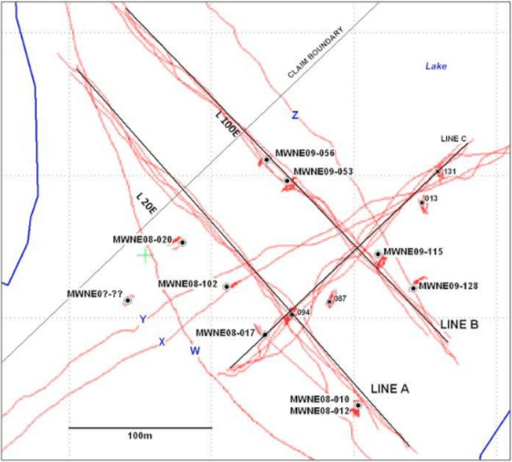
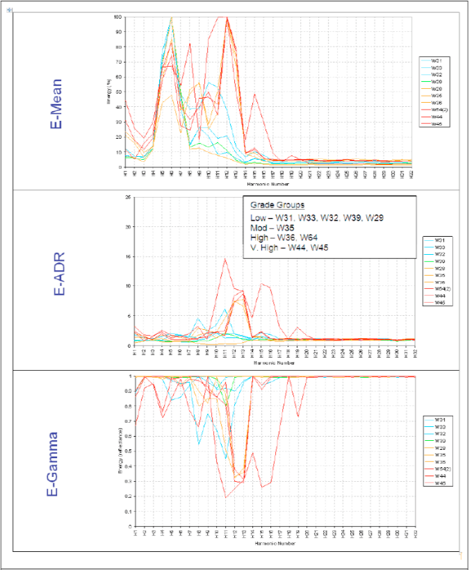

Uranium field test at Roughrider deposit, Athabasca Basin, Saskatchewan
Project aims
The ADR Test survey was completed during a 10 day period in early August 2009. The survey included 13 V-bore stare scans and WARR scans as well as three P-Scan survey lines. All survey data was collected from a floating platform on McMahon Lake.
 Figure 1: Location mapExploration/Project challenges
The program objectives involved evaluating the ability of the ADR technology to map out sub- surface geological features in the Athabasca Uranium deposit environment. Specifically, would the technology be able:
- To develop an application and procedure to process, analyse, and interpret the ADR survey data that would provide meaningful and practical results.
- To map the local stratigraphy and structure – i.e. identify: the unconformity; controlling structures; host pelitic gneiss; marker conglomerate, etc.
- To identify key indicator minerals and alteration associated with uranium mineralization – i.e. clay alteration, silicification, graphite, sulphides, etc
- To directly detect Uranium mineralization – i.e. distinguish between low grade, high grade, and unmineralized material.
Geological context
The geology sections show a sharp unconformable contact between an upper sequence of flat-lying sandstones and conglomerates and a lower basement domain of variably altered gneisses, granites, and pegmatites. The uranium mineralization occurs in the footwall of the unconformity and is most commonly hosted in an altered pelitic gneiss unit. The alteration halo typically commences at or just above the unconformity and is highly variable in terms of intensity and type (red hematite, green chlorite, massive clay) with the most intense alteration associated with mineralization. The drill logs describe the mineralized intervals as, (paraphrased from MWNE-09-102 drill log):
“Pervasive strong clay altered, locally friable, common strong clay gouge, part of a fault system, weakly graphitic and trace disseminated pyrite: strong pervasive dark green to black chlorite alteration”.
The logs also describe significant faults associated with and perhaps controlling localization of mineralization and alteration, for example hole MWNE-08-017 at 221m intersected a friable fault with 50% core loss over 0.50m.
 Figure 2: Survey Locations -- P-Scan Lines, V-bore, and WARRADROK mapped the mineralization as a discreet, flat-lying lens that lies slightly deeper on Line A than Line B suggesting a shallow plunge of the zone from NE to SW (Figure 5). On Line A the zone is defined by 3 significant high grade drill hole intersections whereas on Line B there is one high grade intersection supported by other lower grade narrower intervals. This suggests the zone contains 2 types of mineralization: high grade lenses surrounded by a halo of lower grade material.
Note: hole MWNE-08-17 intersected a modest 1.38% U3O8 over 1.0m but appears to be very close to the 3 high grade intersections on Line A. This illustrates the irregular, variable nature of the mineralization.
There are 2 characteristics of the deposit that are of particular interest when analyzing the ADR data
- Clay Alteration -- is associated with uranium mineralization, controlling structures, and most likely has relatively high water content. Dielectric is a very good measure of water content and potentially could discriminate zones of clay alteration.
- Massive Mineralization – since ADR detects energy responses on the sub-atomic level, then high grade uranium mineralization containing a high percentage of uranium atoms should be able to be characterized and detected at depth.
Adrok’s results
This report describes the results of the August 2009 Test Survey completed by Adrok Limited ("Adrok') early 2010Q1.
Adrok’s proprietary Atomic Dielectric Resonance (“ADR”) Technology is based on the principle that different materials will reflect and absorb electro- magnetic radiation (radiowaves, microwaves) at specific frequency and energy levels. The ADR geophysical system transmits a (patented) conditioned beam that resonates and reacts with the sub-surface materials. The returning resonant energy response is accurately received, in time and space, and measured in terms of energy, frequency and phase relationships. Data resolution is many times greater than acoustic imaging methods such as seismic or ultrasound, or other radar imaging such as ground penetrating radar.
Three independent statistical variables are selected for the harmonic analyses. The mean energy (E- Mean), resonance energy (E-ADR), and reflective energy (E-Gamma) responses are measured over a chosen harmonic number (frequency) range. A fourth independent variable, the dielectric constant, was also collected and, in this environment, is used as an indicator of water content associated with intense clay alteration.
Data acquisition is relatively quick as the ADR Scanner and equipment are small and mobile. The standard survey modes include Virtual Borehole (“V-bore”), Wide Angle Reflection and Refraction (“WARR”), and Profile Scan (“P-Scan”). The P-Scan provides a seismic-like sectional image that offers opportunity for structural and stratigraphic mapping of the sub-surface.
The primary application of the ADR technology has been in the oil and gas, coal, and civil engineering fields. Mineral exploration is a new domain for the technology.
Roughrider test survey data was collected over a 10-day period in early August 2009. V-bore and WARR data was collected for 13 holes on Lines A, B, and C, and P-Scan surveys were performed on 7 Lines including Lines A, B, and C. Only data associated with Lines A and B was processed.
Adrok completed geological interpretations of Lines A and B based on nine drill hole logs provide by the client. The interpretation included an outline of the uranium mineralization, the location of the unconformity, areas of intense clay alteration, and major stratigraphic units.
The analytical method used Line A (grid L30E) as the “Training” section and Line B (L100E) as the “Test” section. The Training line was used to calibrate the analysis procedure on a section of known geology (5 drill logs provided to ADROK). The “Test” section was be used to validate the analysis procedure (4 drill logs were provided by The client but not made available to Adrok).
The ultimate objective of the current analysis was to develop a procedure for the direct detection of uranium mineralization, or, alternatively, to discriminate areas of potential uranium mineralization in the sub-surface. In addition, the potential identification of stratigraphic, structural, and alteration elements was examined as part of the test survey.
Adrok applied a 3-step procedure that integrates both ADR data and P- Scan image analysis. The work has produced important results that potentially have confirmed the presence of uranium mineralization in the sub-surface. The procedure is at an early stage, and conclusions, as yet, are based on only a handful of tests. Many more tests should be completed to confirm with confidence that the procedure which was developed can consistently produce meaningful results.
Step 1 of the procedure involves a horizontal bandpass filter of the P-Scan section that has successfully identified the location of the unconformity as well as several lineaments possibly representing structures and stratigraphic features. An area of interest was selected, based on the geological interpretation of the P-Scan, for more detailed Sub-Image analysis.
Step 2 involves additional bandpass filtering based on the harmonic energy response of the wet mineralized drill core samples. The resultant Sub- Image product can be used to refine and enhance the location of the unconformity, structures, lithologies, and identify high energy “hotspots” that may be indicative of uranium mineralization.
Step 3 filtering was applied that suppresses the background leaving only the high energy hotspots as dots and highlighting the areas of potential uranium mineralization.
An analysis was conducted to determine if the hotspots have a harmonic uranium signature. The ADR signature for a 10x10m “Training” block of known mineralization on the “Training” section (Line A) was determined. Then, the ADR signature of several “Test” blocks of suspected mineralization (hotspots) located on the “Test” section (Line B) were determined. A Hilda Correlation Analysis was conducted that compared the degree of similarity of the ADR signatures of the Test blocks to the Training block and correlated and quantified the results.
The results, although only based on the limited data from the test survey, are good and returned results as expected. The Test blocks with mineralization have correlated very well with the high grade Training block, and the block with no mineralization had a poor correlation with the Training block.
Many more Test block correlations are required to make these results statistically relevant.
The analytical procedure was substantially improved during the Line B analysis producing significantly better interpretative P-Scan and Sub- Image products. The procedure requires more testing and the quality of the products will continue to improve with additional analysis work on other survey lines.
The analytical procedure developed used the dielectric constant as an indicator of water content associated with intense clay alteration and, potentially, uranium mineralization. On Line A, a dielectric high interval was detected immediately below the unconformity and coincides with a zone of intense clay alteration associated with the mineralization. On Line B, a clear dielectric response associated with clay alteration was less obvious, the reasons for this should be investigated.
 Figure 5: ADR signatures of different Uranium graded core sampleThe Roughrider Zone test survey is the first application of the ADR technology to the Athabasca uranium environment. In fact, Adrok has completed few surveys in the minerals resources field having focused mainly on civil engineering and, more recently, coal and oil and gas applications.
The development of a procedure for the analysis of the ADR data in the complex Athabasca geological environment has proven to be a challenge. Standard ADR data analysis procedures did not consistently produce expected results on the Training section. A new analytical procedure was required. ADROK recognized the value of the P-Scan images as effective tools for mapping the sub- surface geology. In close collaboration with Adrok, attention was focused on image filtering to highlight key stratigraphic and structural features and areas of potential uranium mineralization.
On Line A, Adrok had initially produced P-Scan images, one of which (Figure 14) clearly showed the position of the unconformity. Other images were then produced that showed linear features which appeared to represent faults, however these features were masked by strong horizontal striping caused by reflectance of the ADR beam (Figure 15). The concept of Sub-Images was introduced and was designed to provide more detailed data and imaging processing of selected areas of the P-Scan. Bandpass frequency filtering, based on known ADR typecasting analysis of wet mineralized drill core samples, was applied to the Sub-Images to highlight energy responses possibly associated with uranium mineralization (Figure 16). The results were encouraging enough to proceed to the Test section.
On Line B, a horizontal bandpass filter was introduced and applied to the P-Scan and produced a high quality, high resolution image that eliminated the horizontal striping and offered better opportunity for geological interpretation (Figure 17). The improved P-Scan product resulted in a superior Sub-Image product for detailed interpretation. Low-end bandpass filtering reduced the background leaving only the high energy “hotspot” responses thought to represent uranium mineralization (Figure 18).
However, the question remained: are the “hotspots” truly indicative of uranium mineralization? Adrok, in order to understand the behaviour of the uranium mineralization conducted Hilda analysis that identified the energy, frequency and phase harmonic signature of selected 10m blocks of the Sub- Images. The Hilda analysis of these blocks was a significant advance in the development of the ADR analysis procedure – an integrated process of data and image analysis.
Adrok developed a comparison method of correlating the Hilda results of unknown (to Adrok) areas of mineralization to a known area of uranium mineralization (Figures 19 and 20). The ADR Hilda results was determined for the 10m high grade “Training” block selected on Line A and six other blocks of suspected mineralization on Line B. A mathematical correlation was completed comparing the test blocks to the Training block and the results were as expected (Table 8) -- blocks with mineralization correlated well and one non-mineralized block had a poor correlation. Many more test block correlations are required to confirm with statistical confidence this procedure.
The validity of the training and testing procedure is only as reliable as the data on which it is based. More accurate input data would only assist to improve the consistency of the procedure results. On
Training Section Line A, the assay data and geological interpretation is based on a few drill holes located 20m to the southwest – a considerable distance for correlations given the complex and variable nature of the deposit. The training step of the procedure could be developed on a line with the highest density of drill hole data or, ideally, over an existing operation.
Conclusions
Several important conclusions can be made with respect to the program objectives:
1. Development of an Analytical Procedure:
Adrok and ADROK have collaborated to develop a new procedure -- based on a limited number of test blocks -- that integrates both ADR data and P- Scan image analysis to produce meaningful results. The 3-step procedure involves selected filtering of the P-Scan and Sub- Images to map sub-surface geological features including the unconformity, structures, and potential areas of uranium mineralization. Geological input is incorporated at each step to assist with data and image analysis and interpretation.
The procedure has evolved substantially – the Line B image products are superior to those created for Line A. In particular, the application of a horizontal bandpass filter (Step 1) on the Line B P-Scan images eliminated the strong horizontal striping inherent on the Line A images. The improved products are of higher quality and resolution and offered better opportunity for geological interpretation and data analysis.
The procedure requires much more testing and will continue to evolve and be refined with processing of addition survey data.
2. Map Stratigraphy and Structure:
On Lines A and B, filtering of P-Scan images identified with a relatively high degree of confidence the location of the unconformity. Of significance is the improved Line B image produced by applying the horizontal bandpass filtered. The image clearly displays numerous sub- vertical (cross-cutting structures) and horizontal (bedding in sandstone) features. In addition, Line B P-Scans produced a superior Sub-Image product for Step 2 and 3 analysis and geological interpretation.
On Line A, the P-Scan image appears to show major basement domains even though the image was not specifically filtered to enhance these features. This suggests opportunity to apply filtering techniques that could specifically highlight basement lithologies, domains and structures.
3. Identify Alteration and Indicator Minerals:
The Dielectric response to water concentrations can be used to identify “wet” ground conditions such as wet faults, intense clay alteration, and lake and overburden depths. On Line A, a Dielectric high interval located immediately below the unconformity coincides with intense clay alteration that, in some holes, hosts uranium mineralization. On Line B, the clear dielectric response association with clay alteration was less obvious. Other dielectric highs coincide with McMahon Lake (lake water causing extreme spikes at the top of each hole) and possible water- bearing faults (i.e. DH010 80m above the unconformity).
No attempt was made to develop a filter to specifically identify indicator minerals. However, an opportunity exists to develop a new analysis technique to identify indicator minerals such as graphite, sulphides or others that are known to be associated with uranium mineralization.
4. Direct Detection:
The ultimate objective of the current analysis was to develop a procedure for the direct detection of uranium mineralization, or, alternatively, to discriminate areas of potential uranium mineralization in the sub-surface. Initial tests of the procedure have produced results as expected.
The current procedure is outlined on Figure 6 and described in Sections 4 and 5 and Appendix VI and involves filtering of the P-Scan and Sub-Images to identify geological areas of interest and mapping energy “hotspot” responses that are thought to be indicative of uranium mineralization.
A strategy to test the image analysis results was developed and involved Hilda Correlation Analysis and comparison of known to unknown mineralized areas (Section 6). Correlations to date have only been conducted on a small number of tests but results have been as expected.
The procedure is at an early stage and requires much more testing to confirm with confidence that the results are consistent and accurate.
5. Dielectric data is an effective indicator of water content in the sub-surface. Additional applications for this tool are being considered, and include: locating water-filled underground mine workings, areas of water saturated sandstone, water-laden faults; and identifying freeze zone contacts in active mines.
Recommendations
- Additional test block correlations should be conducted on Line B to establish with confidence that the current procedure developed is statistically relevant;
- Line C data should be processed to assist in deposit characterization and to further develop the analytical procedure; and
- If tests continue to confirm the reliability of the current procedure then additional property surveys are warranted at Roughrider and elsewhere to assist with generating targets for drill testing.